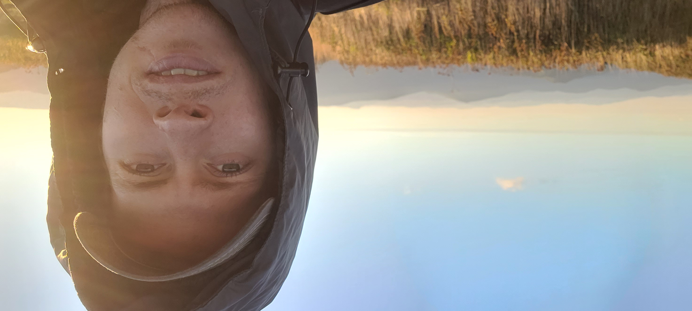
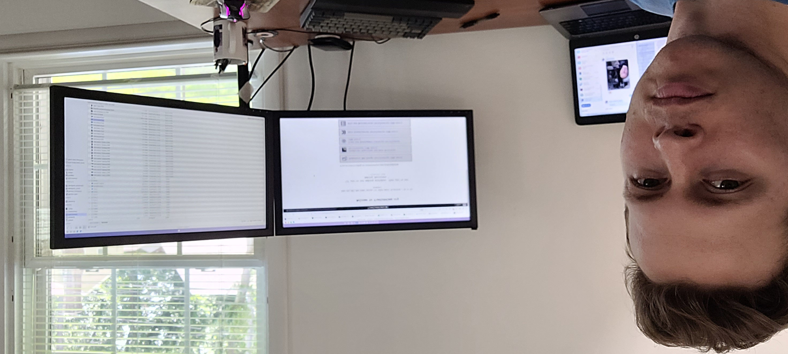

I'd like to thank you for stopping by my site!
 Whether you're family, a prospective employer or another github-ber, this site aims to showcase what can be done with a little bit of Angular.
I come from a background as an Insurance Adjuster, having worked with and for various nationwide carriers. During that time, I've worked in the aftermath of hurricanes and wildfires and other things that mother-nature can throw at us. Eventually, I found that creating a faster workflow and macros appealled to me more than living out of a suitcase, and so I found myself graviting towards the front-end environment building with Angular and other tools.
Fond of building things from scatch....